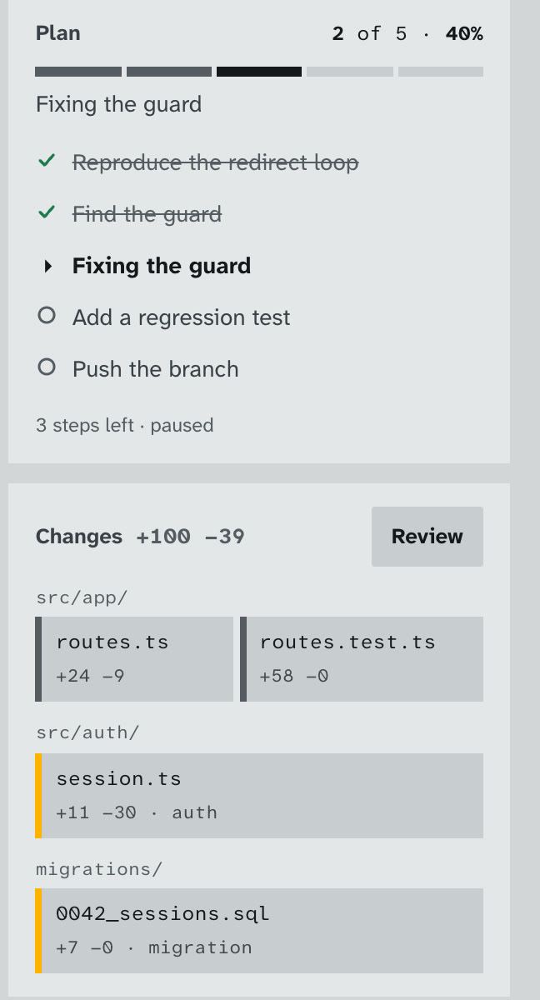

A morning with eight sessions.
Four moments where Cockpit saves you the reading. It's useful with one session, and it earns its keep with five.
Everything that needs you, in one queue.
Questions, permissions and plan approvals from every session, oldest first. Press 1–3 to pick, A to allow, D to deny. The session carries on by itself, and nothing sits waiting in tab six.

A plan you can read in ten seconds.
Pick "plan it first" and Claude writes one page before touching code: the goal, what's in and out, the risks, and the questions it needs you to answer. Answer them inline, leave notes, then hit Build from plan.

PR reviews, one finding at a time.
Your /review comes back as findings, riskiest first, each with its snippet. Press N to note one, then publish them as one GitHub review. On your own PRs it runs the other way: each reviewer comment becomes a choice, and the session makes the fix.

One workspace per client.
Each workspace has its own Claude sign-in, memory and history, and shares your skills and settings. ⌘1–9 to switch, ⌘0 to see all of them on one map, with what needs you counted beside each name.

Also in the box
claude you already have installed, so your hooks, skills, MCP servers and CLAUDE.md behave the same. Hand any session to a real terminal with ⌘T.
What changedEach session's plan with live progress, and the files it touched grouped by folder. Auth and migrations are flagged.